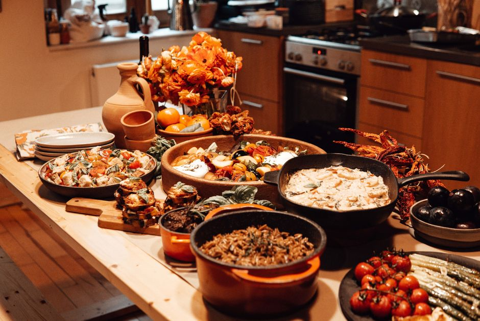
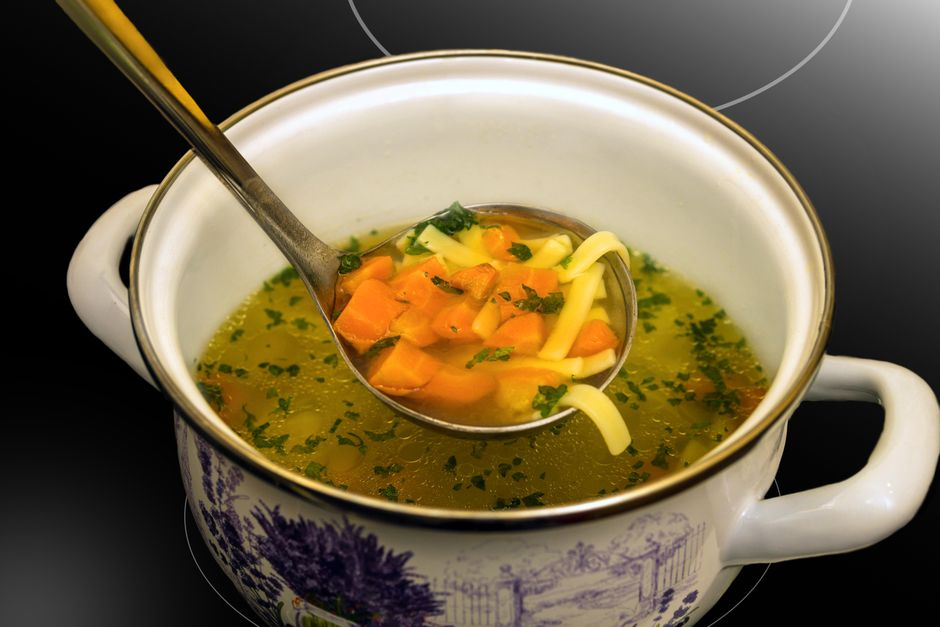

Easy Ways to Transform Leftovers into Economical Meals for Students

Photo: furkanfdemir / Pexels
Introduction
Eating on a budget as a student can be a challenge, especially when you're trying to stretch your meals to last longer. Transforming leftovers into new, delicious meals is a practical way to save money and reduce food waste. Here are five easy methods to repurpose your leftovers in creative and tasty ways.
1. Leftover Pasta Night
Photo: Alexey Demidov / Pexels
Pasta is a staple in most students' diets, and turning it into a new meal can be as simple as adding a few ingredients. For example, take last night’s spaghetti and turn it into a creamy Alfredo sauce. Drain the spaghetti, melt 2 tablespoons of butter in a pan, and add 1 cup of heavy cream. Stir until the mixture thickens, then mix in the cooked spaghetti. Season with salt, pepper, and grated Parmesan cheese. Serve with a side of steamed vegetables for a balanced meal.
2. Leftover Vegetable Soup

Photo: Gundula Vogel / Pexels
Leftover vegetables from last night's dinner can be transformed into a hearty vegetable soup. Start by simmering a large pot of chicken or vegetable broth. Add 1 cup of leftover carrots, 1 cup of celery, and 1 cup of leftover peas. Bring the soup to a boil, then reduce the heat and let it simmer for 10 minutes. Add 1 can of diced tomatoes, 1 cup of chopped onion, and 1 cup of chopped bell peppers. Season with salt, pepper, and a pinch of thyme. Let it cook for another 10 minutes, and you have a nourishing and flavorful soup.
3. Leftover Meat Tacos
Leftover ground beef, chicken, or pork can be used to create delicious tacos. Mix 1 cup of leftover meat with 1/4 cup of salsa, 1/4 cup of shredded cheese, and 1 tablespoon of sour cream. Fill soft taco shells with the mixture and top with diced tomatoes and chopped cilantro. Serve with a side of corn or flour tortillas. For a protein-packed meal, add 1 cup of cooked rice and 1/2 cup of black beans.
4. Leftover Rice Stir-Fry
If you have leftover rice, turn it into a stir-fry with just a few ingredients. Heat 1 tablespoon of oil in a large pan over medium-high heat. Add 1 cup of sliced carrots, 1 cup of sliced bell peppers, and 1 cup of sliced onions. Stir-fry for 5 minutes, then add 1 cup of leftover rice. Stir in 1 tablespoon of soy sauce, 1 tablespoon of oyster sauce, and 1 teaspoon of sesame oil. Cook for another 2 minutes until everything is heated through. Serve with a side of green beans or steamed broccoli.
5. Leftover Chicken Quesadillas
Leftover chicken breast can be used to make tasty quesadillas. Heat 1 tablespoon of oil in a non-stick pan over medium heat. Place 1 cup of shredded leftover chicken in a tortilla and add 1/4 cup of shredded cheese. Fold the tortilla in half and cook for 2 minutes on each side until the cheese is melted and the tortilla is golden brown. Remove from the pan and cut into triangles. Serve with a side of guacamole and salsa.
Conclusion
Transforming leftovers into new meals is not only an economical choice but also a creative and fun way to make your meals more interesting. By using a few simple techniques, you can enjoy delicious and nutritious meals without breaking the bank. So, next time you have leftover ingredients, try one of these recipes and see how you can make the most of what you have!
Recommended products
As an Amazon Associate, I earn from qualifying purchases.